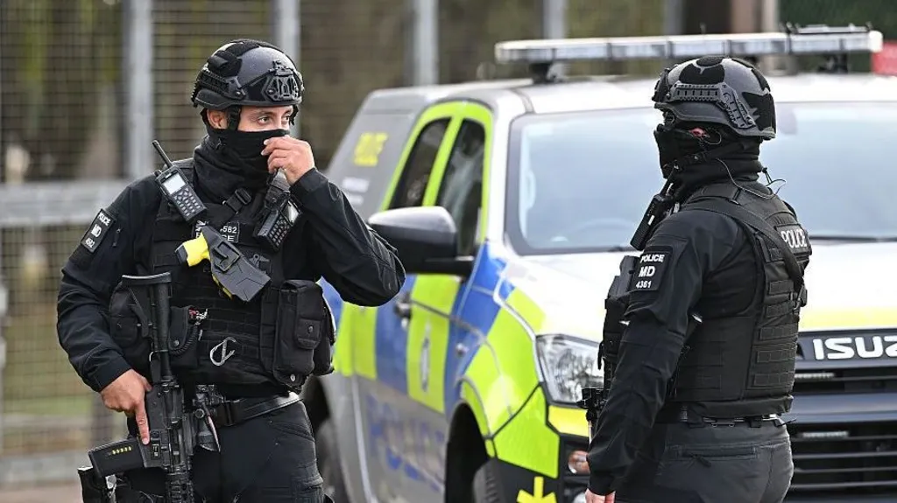

| Home | world | Pakistan | Business | Science | Sports | Technology | Entertainment | Health | Trending | Contact |
|---|

A UK-Iranian dual national has been arrested on suspicion of preparation of terrorist acts in connection with the incident at RAF Fairford, counter-terror police have said.
The 25-year-old man was arrested in Westminster, London. Two properties in the area have been searched.
Counter-terror police are considering "all possible angles - including foreign state involvement", the force's senior national coordinator Vicki Evans said.
"The investigation into circumstances surrounding events in Gloucestershire is hugely complex, and our specialist teams are interrogating multiple lines of enquiry," she said.
"I'd like to thank the public for their continued support and patience whilst we work through this investigation."
Police had initially given the dual UK-Iranian national's age as 27 and said a second man had been questioned under caution, but in a later update said that this was not the case.
Prime Minister Andy Burnham said on Wednesday there were "strong indications" that Iran played a part in the incident. He did not provide further details, and Tehran has strongly denied any involvement.
The five men were arrested in the early hours of Sunday morning after "three suspicious vehicles" were reported travelling towards the base operated by the US Air Force (USAF), sparking a major security incident.
The BBC understands that one of the men had dialled 999 himself, about an hour before a local farmer alerted police to a "large group" of masked men near the vehicles.
They were arrested on suspicion of explosives offences and later on suspicion of preparing a terrorist act, before being released on bail on Monday in what police called an "investigative decision" that was "grounded in experience and strategy".
Police said a quantity of petrol but no explosive devices were found during searches of vans near the site.
The group were aged between 23 and 25. Four live in Westminster and one in Camden, and searches of their homes were carried out.
US Secretary of State Marco Rubio said on Monday that "the hands of a foreign actor" had clearly been involved in the incident at the base, which has been used as a forward operating location by the USAF for decades.
In recent months, US bombers have taken off from the airbase for the Middle East, after the UK approved a US request to use it for what it called defensive strikes on Iran.
On Thursday, the British ambassador to Iran met the country's foreign ministry at the request of the Iranian government.